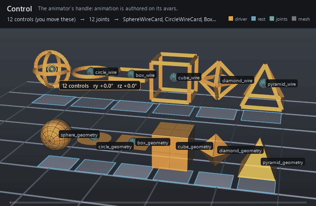

| On this page | |
| Node type | RigExecControl |
| Example | control.usda |
| Category | Transform providers |
Overview ¶

A control is the rig's interaction surface. An animator keys its
translation, rotation, scale, and spin avars, and solvers and movers read
the resulting posed frame. Controls draw a viewport guide at the posed
origin — sphere, circle, box, cube, diamond or pyramid, drawn
as curves (wire) or as solids (geometry) — so the handle can be picked
directly; unlike joints and solvers, a control is not a diagnostic, so it
keeps the default render purpose.
An animator-facing RigExecXformable: animation is authored on the avars (or an authored/connected posed:space), exactly like an Ir xformable. Channel semantics live on the applied RigExecControlAPI. Publishes computePointFrame/computeRestFrame/ computeMatrix (spec section 4.1). A synthesized viewport guide can be drawn at the posed frame origin (see guide:shape), purpose guide, the same synthesis-only style as the RigExecJoint guides.
How it works ¶
A control is evaluated in the base phase only — it is an input, so
nothing in the pose domain revises it and its base frame IS its posed
frame. The frame comes from rest:space plus the avars each frame:
translations and Euler rotations compose over the rest offset inside the
selected parent and default spaces (avars * posed:defaultSpace *
inverse(parent:defaultSpace) * parent:space), and scale avars apply
before rotation and translation. Anything downstream — an FK chain
listing the control, a constraint naming it as a source, a matrix mover
reading its frame — follows the animated result with no further
wiring.
Wiring ¶
| Relationship | Points to | Required |
|---|---|---|
| (none) | Controls are read by solvers, constraints, and movers; they take no input relationships. | - |
Parameters ¶
Control channel
rigExec:channelRoleuniform token, default "pose"
Transform provider
rest:txdouble, default 0
rest:tydouble, default 0
rest:tzdouble, default 0
rest:rxdouble, default 0
rest:rydouble, default 0
rest:rzdouble, default 0
rest:spacematrix4d, default ( (1, 0, 0, 0), (0, 1, 0, 0), (0, 0, 1, 0), (0, 0, 0, 1) )
Bind transform relative to the namespace frame provider's rest frame; always orthonormalized. A provider with no RigExec ancestor resolves against identity, so its rest:space is its local-to-world bind transform.
default:txdouble, default 0
default:tydouble, default 0
default:tzdouble, default 0
default:rxdouble, default 0
default:rydouble, default 0
default:rzdouble, default 0
default:spacematrix4d, default ( (1, 0, 0, 0), (0, 1, 0, 0), (0, 0, 1, 0), (0, 0, 0, 1) )
Local-to-world zero position for posing. Its computed fallback is compose(default translation/XYZ rotation) * rest * inverse(parent rest) * parent:defaultSpace. The rest is unaffected by default edits. A connection is authoritative, including identity. Otherwise a non-identity authored matrix overrides the computed fallback; an identity value selects that fallback.
posed:spacematrix4d, default ( (1, 0, 0, 0), (0, 1, 0, 0), (0, 0, 1, 0), (0, 0, 0, 1) )
Final local-to-world transform. For a joint this is supplied by the compiler's private solver binding (view-free extraction); it may also be authored or connected directly. Unwired xformables follow the parent chain with rest offsets and avars.
posed:defaultSpacematrix4d, default ( (1, 0, 0, 0), (0, 1, 0, 0), (0, 0, 1, 0), (0, 0, 0, 1) )
Controller-adjusted zero pose; falls back to avars:defaultSpace. Used by the local-avars pose path before parent motion. A connection overrides the fallback, as does a non-identity authored matrix.
avars:txdouble, default 0
avars:tydouble, default 0
avars:tzdouble, default 0
avars:rxdouble, default 0
avars:rydouble, default 0
avars:rzdouble, default 0
avars:rspindouble, default 0
avars:rotationOrdertoken, default "XYZ"
avars:defaultSpacematrix4d, default ( (1, 0, 0, 0), (0, 1, 0, 0), (0, 0, 1, 0), (0, 0, 0, 1) )
Zero pose supplied to avar evaluation; falls back to the computed default:space. A connection or non-identity authored matrix selects another zero pose.
avars:unitScaleFactordouble, default 1
Multiplier converting translation avars into local distance units before the selected default and parent transforms. Rotations and scales are unaffected.
parent:spacematrix4d, default ( (1, 0, 0, 0), (0, 1, 0, 0), (0, 0, 1, 0), (0, 0, 0, 1) )
Selected parent's posed local-to-world space. Falls back to the nearest namespace provider's computePointFrame; identity when there is none. Connections (including identity) or a non-identity authored matrix select a different parent space.
parent:defaultSpacematrix4d, default ( (1, 0, 0, 0), (0, 1, 0, 0), (0, 0, 1, 0), (0, 0, 0, 1) )
Selected parent's default local-to-world space. Falls back to the nearest namespace provider's computeDefaultFrame. Connections (including identity) or a non-identity authored matrix override it. The avar pose is avars * posed:defaultSpace * inverse(parent:defaultSpace) * parent:space, in row-vector convention.
Node parameters
avars:sxdouble, default 1
Local X scale applied before rotation and translation; finite magnitudes below 1e-4 resolve to signed 1e-4, strict authoring rejects non-finite values, and raw non-finite USD resolves to identity on this axis.
avars:sydouble, default 1
Local Y scale applied before rotation and translation; finite magnitudes below 1e-4 resolve to signed 1e-4, strict authoring rejects non-finite values, and raw non-finite USD resolves to identity on this axis.
avars:szdouble, default 1
Local Z scale applied before rotation and translation; finite magnitudes below 1e-4 resolve to signed 1e-4, strict authoring rejects non-finite values, and raw non-finite USD resolves to identity on this axis.
guide:shapeuniform token, default "circle"
Guide primitive synthesized at the control's posed frame origin (spec section 10.3 extension), exactly parallel to the RigExecJoint sphere/cone guides. Every shape is unit-sized and centered at the origin: sphere and circle have radius 1, box and cube span +-1, diamond (octahedron) has vertices at +-1 on each axis, and pyramid has base corners (+-1, -1, +-1) with apex (0, 1, 0). circle and box are the planar shapes -- normal +Y, drawn in the local XZ plane -- while cube is the 3D box; this is the conventional rigging distinction between the two box-ish tokens.
guide:drawModeuniform token, default "wire"
wire draws the guide as curves, widthed by guide:wireWidth. geometry draws solid shapes instead.
guide:wireWidthdouble, default 0.05
Width authored onto the wire curves, in the LOCAL pre-scale units of the unit shape -- so the drawn width tracks the evaluated control-frame scale multiplied by guide:scaleX/Y/Z along with the rest of the shape. A non-uniform effective scale thickens the curve anisotropically exactly as it stretches the points.
Zero or negative authors no widths at all and falls back to hairline rendering; geometry draw mode ignores this entirely.
It has a default rather than being left unauthored because usdview picks with a single-pixel window: an unwidthed hairline is a one-pixel target that a real click virtually never lands on, and an empty pick deselects to the pseudo-root. The default width is what makes a wire control selectable at all.
guide:scaleXdouble, default 1.0
Positive per-axis draw multiplier of the guide shape whose final size is abs(evaluated frame axis) * guide:scaleAxis, authored as three separate double properties rather than a vec3. The control's posed frame is orthonormalized for placement while its evaluated axis magnitudes are retained for sizing. A non-positive or non-finite guide multiplier on any axis draws no guide at all, independently of the signed 1e-4 floor on avars:sx/sy/sz.
guide:scaleYdouble, default 1.0
Per-axis draw scale along the local Y axis; see guide:scaleX.
guide:scaleZdouble, default 1.0
Per-axis draw scale along the local Z axis; see guide:scaleX.
guide:offsetdouble3, default (0, 0, 0)
Where the guide shape is drawn, in the control's LOCAL frame, relative to the control's origin. The control still pivots, rotates and scales about its origin; only the drawn shape moves. It is what lets a control whose pivot is buried inside a character (the upper face turns about the base of the skull) be drawn somewhere it can be seen and picked. Scaled by the evaluated control-frame scale, so a scaled control carries its shape with it.
guide:displayColorcolor3f, default (1.0, 0.85, 0.2)
Constant colour of the synthesized guide. May be CONNECTED to another color3f attribute, in which case the first connection source's value at the evaluated time is drawn instead of the local one -- the imaging bridge follows the connection because UsdAttribute::Get never does.
guide:displayOpacityfloat, default 1.0
Constant opacity of the synthesized guide. May be CONNECTED to a float or double attribute -- a limb's IK/FK dial, say -- and then the first connection source's value at the evaluated time is what is drawn, optionally complemented by guide:displayOpacityInvert and never below guide:displayOpacityMin. An unconnected attribute draws exactly the value it holds, floor and invert ignored.
guide:displayOpacityInvertuniform bool, default false
When guide:displayOpacity is connected, draw 1 - source instead of source. This is what lets one dial fade two control sets in opposite directions: the IK controls connect to the switch as-is, the FK controls connect to the SAME switch with this set, and there is no second source of truth to drift. Ignored when the opacity is not connected.
guide:displayOpacityMinuniform float, default 0.15
Floor applied to a CONNECTED guide:displayOpacity after the optional inversion. A dial parked at its end stop would otherwise drive the inactive control set to exactly zero, and a fully transparent control is a trap: an animator who switches a limb to IK can no longer see the FK controls they need to switch back. Hydra still picks at any opacity above 0.0001, so the floor is for the eye, not the picker: 0.15 is enough to find a ghosted control against the character. Zero restores a true fade-out. Ignored when the opacity is not connected.
Example ¶
control.usda
Twelve controls in a 6x2 grid draw every guide:shape in every
guide:drawMode. Left to right in both rows: sphere, circle, box, cube,
diamond, pyramid — box is the planar square lying flat in XZ, cube the
solid six-sided one. The top row is wire (the guide is drawn as curves),
the bottom row geometry (the same shape drawn as a solid). All twelve
carry the same animation — avars:ry 0 → 90°, avars:rz 0 → 22° and
avars:ty 0 → 0.25 over 1001-1024 — and all twelve do real work: each
feeds an FK chain that poses a joint resting at the control, and a matrix
mover carries the grey card a unit below it. Watch either row against the
blue rest outline the cards leave behind: ry spins the card about the
handle's own origin, rz tips it out of the ground plane, and ty lifts
it clear of the outline. The rotation is what the round shapes could not
show on their own — a sphere or a circle turned about its symmetry axis
looks identical — so the card is where the frame's motion becomes
visible.
Open it live with:
bin\launch_usdview.bat docs\examples\control.usdaRe-render the GIF above with:
python docs/render_media.py --page controlTips ¶
Tips
- Keep
rest:spaceat the handle's bind pose and animate only the avars; rest edits re-proportion every downstream solve. guide:shapeandguide:drawModechange the pickable viewport guide without touching evaluation; a pair the build does not draw synthesizes no guide at all rather than falling back to one.guide:wireWidthis in the unit shape's local units — the drawn width is scaled byguide:scaleX/Y/Zalong with the shape — andgeometrydraw mode ignores it entirely.
See also ¶
More transform providers nodes ¶
 Control
ControlThe animator's handle: animation is authored on its avars.
 Joint
JointA posed output of the rig: solvers write it, movers read it.